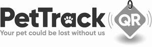

Trade Mark Journal No.2026/012 20 March 2026
UK00004307070 8 December 2025 (9,35,36,38,45)
Mark 1
Mark 2

- Class 9
- Computer software for registering animal or pet details; databases used to register the details of pets or animals and their owners; databases used to identify, locate or reunite lost pets or animals; computer software and hardware for registering, identifying, tracking and locating lost animals or pets; electronic or magnetic identification and registration devices for pets or animals; information and tracking transponders for insertion into animals; global positioning system [gps] receivers.
- Class 35
- Database management; computer database management; compilation of data in computer databases; compilation of a database; compilation and systemization of information into computer databases; computerized file management; retail services connected with the sale of catflaps, animal tags, microchips, pet toys, pet products, pet accessories, veterinary pharmaceuticals, veterinary sanitary preparations, devices for inserting microchips into animals, animal microchip kits, swabs and dressings for veterinary use, leashes, collars, travel cases and bags for pets; information, advisory and consultancy services for the aforesaid services.
- Class 36
- Pet insurance services; financial services relating to pet insurance; financial sponsorship of pet-related events; fundraising services for animal welfare; processing of payments for pet services; pet adoption financing; financial support services for veterinary care; savings schemes relating to animal health, animal health care, and animal health insurance; information, advisory and consultancy services for the aforesaid services.
- Class 38
- Providing access to a database containing details of pets or animals or animal microchip data; providing access to a database used to register, identify, locate or reunite lost pets and animals; providing access to a database allowing users to store details of pets or animals and their owners; electronic transmission of data; leasing of access time to a computer database containing details of pets or animals or animal microchip data; rental of access time to a database server used to identify, locate or reunite lost pets and animals; information, advisory and consultancy services for the aforesaid services.
- Class 45
- Microchip security services for pets or animals; assisting in the locating of lost pets or animals; lost animals location services; investigation services relating to lost pets or animals; information, advisory and consultancy services for the aforesaid services.
Independent Vetcare Limited
Representative: Pinsent Masons LLP